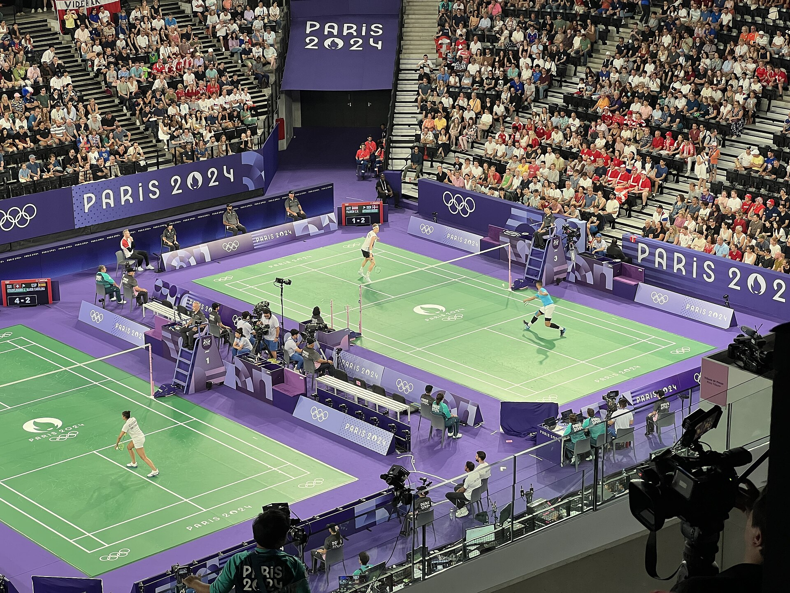
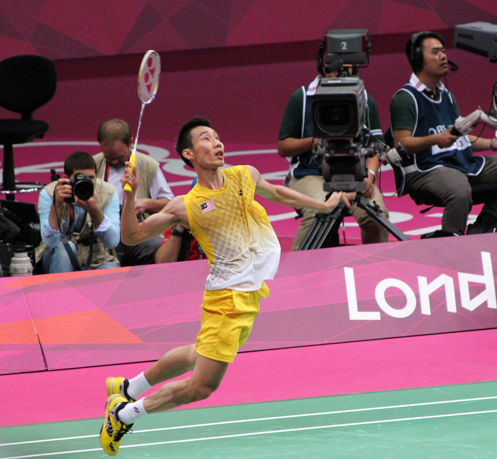
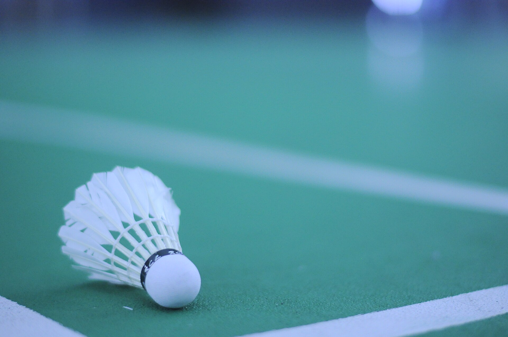

Smash | The Ultimate Badminton Fansite
Home
Gallery
Fun Facts
Rules
Badminton Photo Gallery
Explore the exciting world of badminton!
Olympic Badminton

Badminton at the 2024 Paris Olympics. Photo by Chabe01. Source:
Wikimedia Commons
. License:
CC BY-SA 4.0
.
Jump Smash

Lee Chong Wei prepares to smash during the 2012 London Olympics. Photo by Antony Stanley. Source:
Wikimedia Commons
. License:
CC BY-SA 2.0
.
Shuttlecock

A shuttlecock resting on a badminton court. Photo by Syed Ahmad Fathi. Source:
Wikimedia Commons
. License:
CC BY-SA 4.0
.